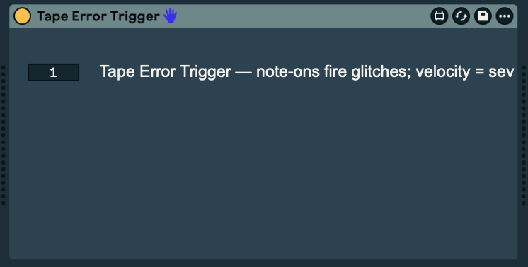

14
tape error
Fire a tape fault on an audio track from a note on a MIDI track — velocity is severity.


about
Two devices, communicating via a shared channel number (1–16), so you can run several independent pairs in one Set. Audio is written continuously to a 12-second tape buffer with a read head chasing the write head; a trigger sags the motor speed, so pitch drops, the head falls behind, and the dropout smears in earlier programme material before over-speeding to wind the tape back in.
- type
- audio effect
- built by
- chatgpt
- state
- working
- folder
- Tape Error
quick start
- 01Put Tape Error on the audio track to be glitched, and Tape Error Trigger on the MIDI track that will fire it.
- 02Set both devices' Chan to the same number.
- 03Any note-on on the MIDI track fires one tape error. Velocity = severity, scaled by the Severity dial — so the dial sets the ceiling.
- 04The Glitch button on the audio device fires a test event (equivalent to velocity 100).
controls
audio device
- Chan1 – 16
- Must match the trigger device. Lets several pairs coexist.
- Severity0 – 1
- Depth of slowdown, dropout and crackle — the ceiling that incoming velocity scales against.
- Length0.05 – 2 s
- Nominal event duration. Actual duration is randomised around this.
- Muffle0 – 1
- How dull the sound gets during slowdown and recovery.
- Vary0 – 1
- How much every parameter is re-randomised per event. 0 = repeatable, 1 = wild. (Appears as
Variationin Live's parameter list.) - Dry/Wet0 – 1
- Usually leave at 100 % — the device is transparent when idle.
- Glitchbutton
- Fires a test event.
trigger device (midi track)
- Chan1 – 16
- Must match the audio device.
workflow
tuning it by ear
All DSP is one gen~ codebox. Values worth adjusting after listening: slowdown depth range (rdepth), motor inertia (0.0012 — smaller is more sluggish and tapey), catch-up speed (0.045), crackle density (0.9975 threshold), and the muffle floor (650 Hz).
gotchas
- These are
.maxpatfiles, not draggable devices in the original workflow: paste them into blank M4L shells. Drop a blank Max Audio Effect, click Edit, Select All + delete, then openTapeError.maxpatin Max, Select All, Copy, and Paste into the device patcher. Cmd+S. Same procedure with a blank Max MIDI Effect forTapeErrorTrigger.maxpat. (Built.amxdcopies are in the folder.)
rebuilding
The patches are the source: TapeError.maxpat and TapeErrorTrigger.maxpat.